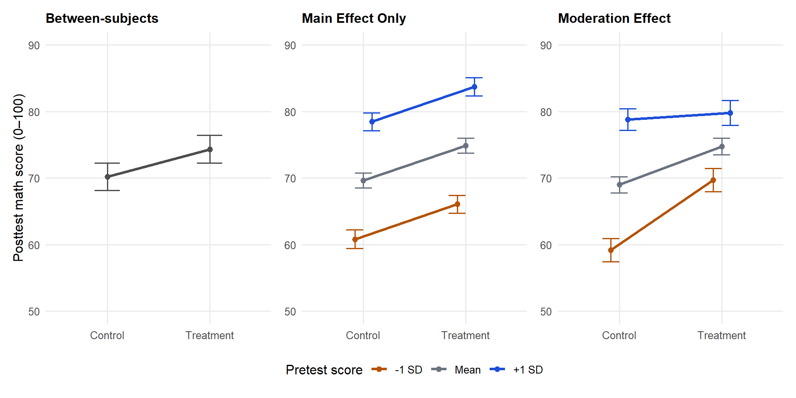
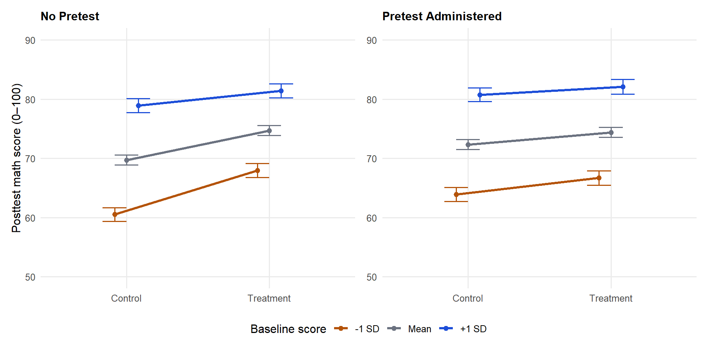
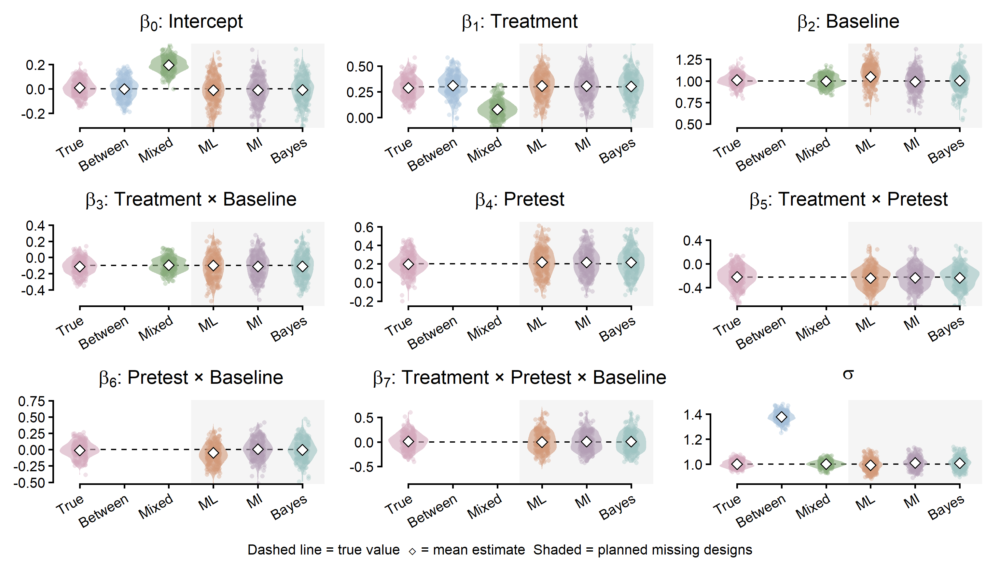
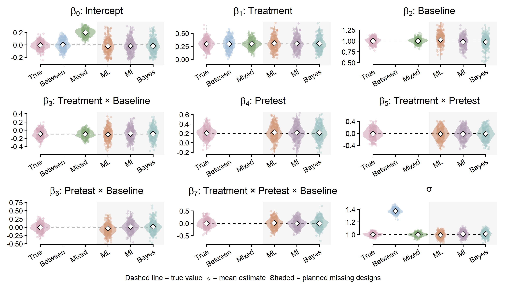
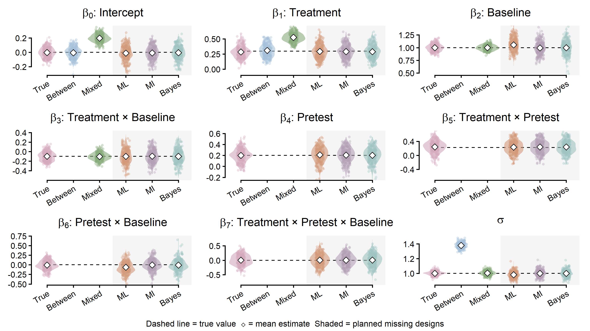
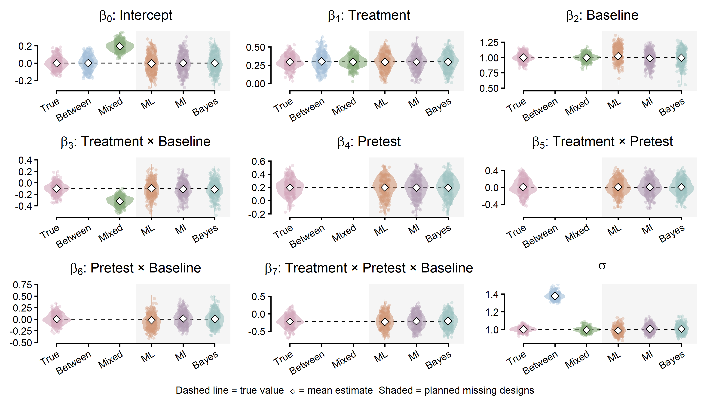
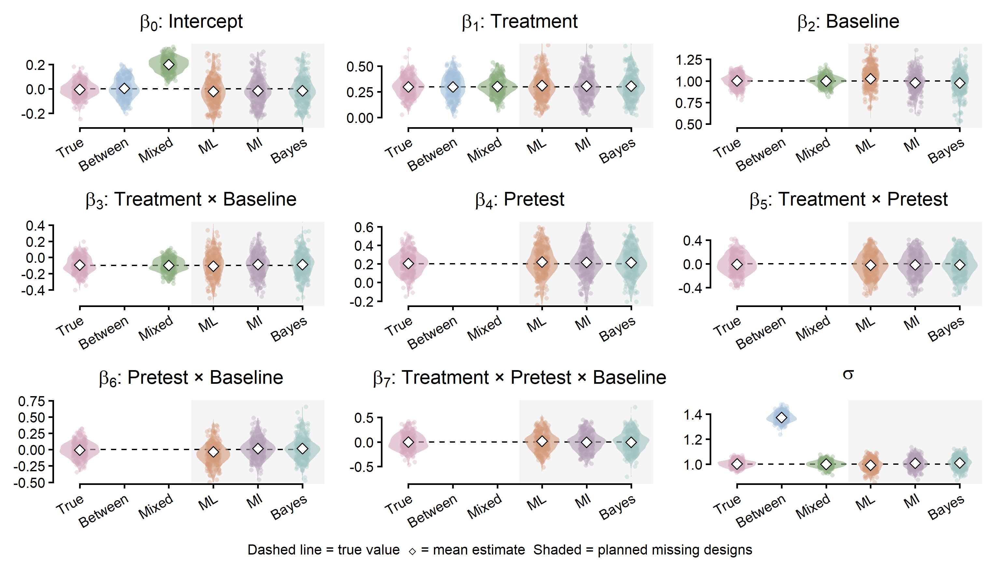
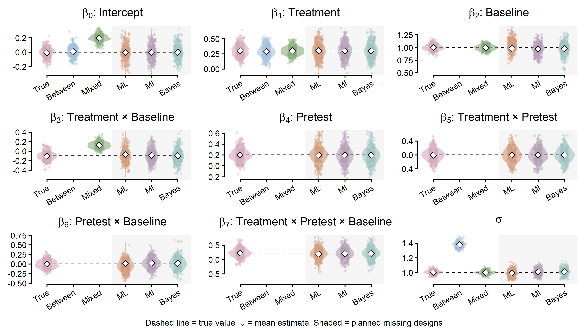

Annual Meeting of the Psychonomic Society, San Diego, CA
Georgia Tech
Georgia Tech
Fordham University
November 22, 2026
Core research design: Randomly assign participants to conditions:
\[ \widehat{\text{Math Score}}_i =\; \underbrace{\beta_0}_{\substack{\text{Control} \\ \text{Score}}} + \underbrace{\beta_1 (\text{Treatment}_i)}_{\substack{\text{Treatment} \\ \text{Effect}}} \]
Limitations
\[ \widehat{\text{Math Score}}_i =\; \underbrace{\beta_0}_{\substack{\text{Control Score} \\ \text{at Mean} \\ \text{Baseline Score}}} + \underbrace{\beta_1 (\text{Treatment}_i)}_{\substack{\text{Treatment Effect} \\ \text{at Mean} \\ \text{Baseline Score}}} \\[2.5em] + \underbrace{\beta_2 (\text{Baseline}_i)}_{\substack{\text{Base Score Effect} \\ \text{in Control}}} + \underbrace{\beta_3 (\text{Treatment}_i)(\text{Baseline}_i)}_{\substack{\text{Difference in Treatment Effect} \\ \text{per unit Change in Base Score} }} \]

\[ \widehat{\text{Math Score}}_i =\; \underbrace{\beta_0}_{\substack{\text{Control Score} \\ \text{No Pretest} \\ \text{at Mean} \\ \text{Baseline Score}}} + \underbrace{\beta_1 (\text{Treatment}_i)}_{\substack{\text{Treatment Effect} \\ \text{No Pretest} \\ \text{at Mean} \\ \text{Baseline Score}}} + \underbrace{\beta_2 (\text{Baseline}_i)}_{\substack{\text{Baseline Score Effect} \\ \text{in Control} \\ \text{No Pretest}}} + \\[2.5em] \underbrace{\beta_3 (\text{Treatment}_i)(\text{Baseline}_i)}_{\substack{\text{Difference in Treatment Effect} \\ \text{per unit Change in Baseline Score} \\ \text{No Pretest}}} + \underbrace{\beta_4 (\text{Pretest}_i)}_{\substack{\text{Pretest Effect} \\ \text{in Control} \\ \text{at Mean} \\ \text{Baseline Score}}} + \underbrace{\beta_5 (\text{Treatment}_i)(\text{Pretest}_i)}_{\substack{\text{Difference in Treatment Effect} \\ \text{from Pretest} \\ \text{at Mean Baseline Score} \\ \text{\textbf{(Measurement Reactivity)}}}} \\[2.5em] + \underbrace{\beta_6 (\text{Pretest}_i)(\text{Baseline}_i)}_{\substack{\text{Difference in Baseline Score Effect} \\ \text{per unit Change in Baseline Score} \\ \text{from Pretest} \\ \text{in Control}}} + \underbrace{\beta_7 (\text{Treatment}_i)(\text{Pretest}_i)(\text{Baseline}_i)}_{\substack{\text{Difference in Treatment Effect} \\ \text{per unit Change in Baseline Score} \\ \text{from Pretest}}} \]

NA!The solution
| Mechanism | Definition | Implication |
|---|---|---|
| MCAR Missing Completely at Random |
\(P(M = 1 \mid Y_{obs}, Y_{mis}) = P(M = 1)\) | Listwise deletion is unbiased, but wastes information |
| CMAR (MAR) Conditionally Missing at Random |
\(P(M = 1 \mid Y_{obs}, Y_{mis}) = P(M = 1 \mid Y_{obs})\) | Must borrow information from observed correlates |
| MNAR Missing Not at Random |
\(P(M = 1 \mid Y_{obs}, Y_{mis}) \neq P(M = 1 \mid Y_{obs})\) | Bias can only be addressed with strong assumptions |
Mapping to our example
Measurement reactivity: the posttest depends on whether baseline was measured
\[ P(Y_2 \mid Y_1, M_1 = 1) \neq P(Y_2 \mid Y_1, M_1 = 0) \]
So we must separately model:
Planned missingness: Randomize \(M_1\) (the Pretest condition) independently of \(Y_1\)
\[ P(M_1 = 1 \mid Y_1, A) = P(M_1 = 1) \]
Measure \(Y_1\) when \(\text{Pretest}_i = 1\)
\[ P(Y_2 \mid \text{Pretest}, \text{Treatment}) \]
Benefits:
Limitations:
Our goal: bring \(Y_1\) back
\[ P(Y_2 \mid Y_1, \text{Pretest}, \text{Treatment}) \]
Benefits:
Limitations
\[ P(Y_2, Y_1 \mid A, \text{Pretest}, \text{Treatment}) = \underbrace{P(Y_2 \mid Y_1, \text{Pretest}, \text{Treatment})}_{\text{Measurement model}} \times \underbrace{P(Y_1 \mid A)}_{\text{Imputation model}} \]
\[ P(Y_{1,\text{mis}} \mid Y_2, A, \text{Pretest}, \text{Treatment}) \;\propto\; P(Y_2 \mid Y_1, \text{Pretest}, \text{Treatment}) \times P(Y_1 \mid A) \]
Maximum Likelihood
mdmb::frm_em()
How it works:
Inference:
Multiple Imputation
Blimp via rblimp, pooled with mitml
How it works:
Inference:
Fully Bayesian
brms with mi(), Stan via cmdstanr
How it works:
Inference:
All three use the same information (A, Math Score, and the measurement model), so all three should recover \(\beta_0\)–\(\beta_7\)
\[ \widehat{\text{Math Score}}_i = \beta_0 + \beta_1 (\text{Treatment}_i) + \beta_2 (\text{Baseline}_i) + \beta_3 (\text{Treatment}_i)(\text{Baseline}_i) + \beta_4 (\text{Pretest}_i) \\[1em] + \underbrace{\beta_5 (\text{Treatment}_i)(\text{Pretest}_i)}_{\text{Manipulated}} + \beta_6 (\text{Pretest}_i)(\text{Baseline}_i) + \underbrace{\beta_7 (\text{Treatment}_i)(\text{Pretest}_i)(\text{Baseline}_i)}_{\text{Manipulated}} \]
\[ A_{ik} \sim N(0, 1), \qquad \text{Baseline}_i = \frac{\sum_{k=1}^{K} A_{ik} + \varepsilon_i}{\sqrt{K + \sigma_{B}^2}}, \qquad \varepsilon_i \sim N(0, \sigma_{B}^2) \]
Benchmarks (not possible in practice or a different design)
Planned missingness: Baseline observed only when \(\text{Pretest}_i = 1\); three ways to recover it using \(A\)
mdmb::frm_em)rblimp, \(m =\) 100), pooled with Rubin’s rules (mitml)brms)What happens with Measurement Reactivity?



What happens with measurement reactivity moderated by baseline?


